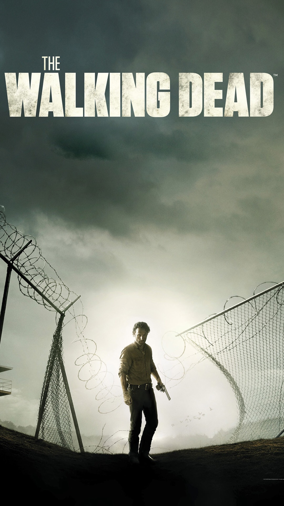

The Walking Dead takes place after the onset of a worldwide zombie apocalypse. The zombies, colloquially referred to as "walkers", shamble towards living humans and other creatures to eat them; they are attracted to noise, such as gunshots, and to different scents, e.g. humans. Although it initially seems that only humans that are bitten or scratched by walkers can turn into other walkers, it is revealed early in the series that all living humans carry the pathogen responsible for the mutation. The mutation is activated after the death of the pathogen's host, and the only way to permanently kill a walker is to damage its brain or destroy the body, such as by cremating it.
The series centers on sheriff's deputy Rick Grimes, who wakes up from a coma to discover this apocalypse. He becomes the leader of a group of survivors from the Atlanta, Georgia, region as they attempt to sustain and protect themselves not only against attacks by walkers but by other groups of survivors willing to use any means necessary to stay alive..